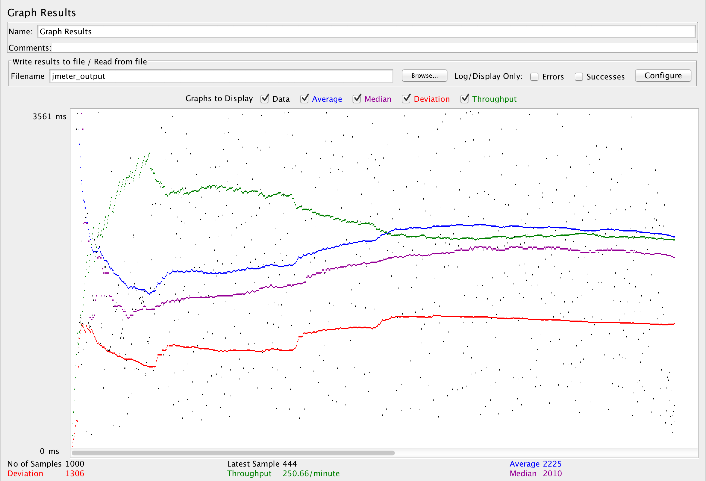

| Single-instance version cases |
Graph Results Screenshot |
Average Query Time(ms) |
Average Search Servlet Time(ms) |
Average JDBC Time(ms) |
Analysis |
| Case 1: HTTP/1 thread |
|
343 |
247 |
62 |
Base case for our analysis. At a glance it's faster than multiple threads running. |
| Case 2: HTTP/10 threads |
 |
2225 |
2126 |
92 |
Slower than a single thread which makes sense and tends to slow down a little overtime. |
| Case 3: HTTPS/10 threads |
|
2465 |
2251 |
96 |
Almost the same as http. Because there needs to be a few extra handshakes due to https for certificate authentication, the times are slightly slower but not significant. |
| Case 4: HTTP/10 threads/No prepared statements |
|
2203 |
2103 |
94 |
Pooling speeds things up a little bit but doesnt' appear to have a significant effect based off of our test cases. The servlet speed slighly increases but the jdbc logic doesn't. This is because the connections reused don't speed things up significantly but preventing a new connection being made increases performance. |
| Case 5: HTTP/10 threads/No connection pooling |
|
1286 |
1143 |
31 |
Prepared statements clearly have a significant effect on the speed of queries and makes up for most of the time compared to pooling. This is because compiliation of sql statements can be skipped such as validation, rewrite, and transformation. |
| Scaled version cases |
Graph Results Screenshot |
Average Query Time(ms) |
Average Search Servlet Time(ms) |
Average JDBC Time(ms) |
Analysis |
| Case 1: HTTP/1 thread |
 |
60 |
155 |
300 |
Average query time is faster than that of the signle instance. This can be attributed to the fact that requests are being sent to the backend servers |
| Case 2: HTTP/10 threads |
|
69 |
1450 |
2023 |
Having 10 threads slows down overtime, but the query time is still faster than that of the single instance |
| Case 3: HTTP/10 threads/No prepared statements |
|
67 |
1330 |
1860 |
Both query time and search time are sped up by connection pooling, but not by a large amount. |
| Case 4: HTTP/10 threads/No connection pooling |
|
98 |
1012 |
1134 |
Both query time and search time are sped up by the prepared statements by alot. This test ran faster than all of the others showing that prepared statements are a powerful tool |